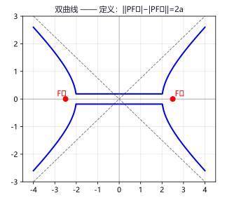
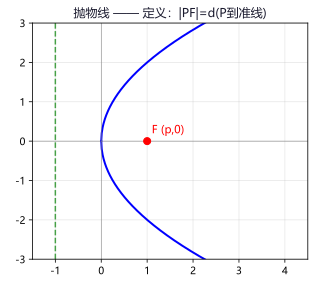
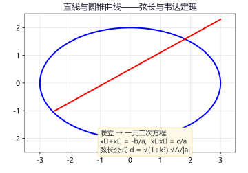

专题一：椭圆
椭圆
定义：平面内与两个定点 F₁、F₂ 的距离之和等于常数（>|F₁F₂|）的点的轨迹叫做椭圆。
即：|PF₁| + |PF₂| = 2a（其中 2a > 2c = |F₁F₂|）。
专题二：双曲线
双曲线
定义：平面内与两个定点 F₁、F₂ 的距离之差的绝对值等于常数（<|F₁F₂|）的点的轨迹叫做双曲线。
即：||PF₁| − |PF₂|| = 2a（其中 0 < 2a < 2c = |F₁F₂|）。

双曲线定义：||PF₁|−|PF₂||=2a，渐近线为虚线
例 1：双曲线的焦点为 (±5,0)，渐近线为 y=±¾x，求标准方程。
解：焦点在 x 轴，c=5。渐近线 y=±(b/a)x，所以 b/a=3/4。
c²=a²+b²=a²+(9/16)a²=(25/16)a²=25 → a²=16，b²=9。
双曲线方程：x²/16 − y²/9 = 1。
例 2：双曲线 x²/9−y²/16=1 上一点到右焦点的距离为 10，求它到左焦点的距离。
解：a²=9→a=3。||PF₁|−|PF₂||=2a=6。
若|PF₂|=10，则|PF₁|=10±6，即 4 或 16。
但双曲线右支上的点到右焦点的最小距离为 c−a=5−3=2，所以 4 和 16 都符合。
例 3：求与双曲线 x²/4−y²/5=1 有共同渐近线且过点 (2,−5) 的双曲线方程。
解：设所求双曲线为 x²/4−y²/5=λ（λ≠0）。
代入 (2,−5)：4/4−25/5=λ → 1−5=−4=λ。
双曲线方程：x²/4−y²/5=−4，即 y²/20−x²/16=1。
• 双曲线 x²/4−y²/5=1 的焦点、离心率和渐近线 答案：(±3,0)，e=3/2，y=±(√5/2)x
• 双曲线离心率 e=2，焦点 (±4,0)，求方程 答案：x²/4−y²/12=1
专题三：抛物线
抛物线
定义：平面内到一个定点 F（焦点）和一条定直线 l（准线）距离相等的点的轨迹叫做抛物线。
即：|PF| = d(P 到准线 l)。

抛物线定义：|PF|=d(P到准线)，焦点 F(p,0) 和准线 x=−p
例 1：抛物线 y²=8x 的焦点坐标和准线方程是什么？
解：2p=8 → p=4。
焦点：(p/2,0) = (2,0)。准线：x=−p/2 = −2。
例 2：抛物线焦点在 (0,−3)，准线 y=3，求标准方程。
解：焦点在 (0,−3)，开口向下。p=6（焦点到准线的距离）。
标准形式：x² = −2py = −12y。
抛物线方程：x² = −12y。
例 3：抛物线 y²=4x 上一点 P 到焦点的距离为 5，求 P 的坐标。
解：2p=4→p=2，焦点 (1,0)，准线 x=−1。
|PF| = d(P→准线) = x_P − (−1) = x_P+1 = 5 → x_P=4。
代入 y²=4×4=16 → y=±4。
P 坐标：(4,4) 或 (4,−4)。
• 抛物线 x²=−12y 的焦点、准线和 p 值 答案：(0,−3)，y=3，p=6
• 抛物线过 (4,−8)，焦点在 x 轴正半轴，求方程 答案：y²=16x
专题四：直线与圆锥曲线的位置关系
位置关系重点
直线与圆锥曲线的位置关系通过联立方程，利用 判别式 Δ 来判断：
联立方程组：{ y=kx+m, Ax²+By²+C=0 }，消去 y 得一元二次方程（二次项系数 ≠ 0 时）：
① Δ > 0 ↔ 相交（两个不同交点）
② Δ = 0 ↔ 相切（一个公共点）
③ Δ < 0 ↔ 相离（没有公共点）
特殊情形：当消去后得到的方程二次项系数为 0 时，直线与曲线只有一个交点（如平行于抛物线对称轴的直线与抛物线相交于一点，但不属于相切）。
弦长公式：设直线 y=kx+m 与圆锥曲线交于两点 A(x₁,y₁)、B(x₂,y₂)，则：
弦长 |AB| = √[(x₁−x₂)²+(y₁−y₂)²] = √(1+k²) · |x₁−x₂| = √(1+k²) · √Δ / |a|
其中 a 为联立后一元二次方程的二次项系数，Δ 为判别式。

直线与椭圆相交→弦长公式与韦达定理结合使用
例 1：直线 y=x+1 与椭圆 x²/4+y²/3=1 有几个交点？
解：联立得 x²/4+(x+1)²/3=1 → 乘12：3x²+4(x+1)²=12。
3x²+4x²+8x+4=12 → 7x²+8x−8=0。
Δ = 64+224 = 288 > 0。∴ 有两个交点（相交）。
例 2：k 为何值时直线 y=kx−1 与双曲线 x²−y²=4 相切？
解：联立得 x²−(kx−1)²=4 → x²−k²x²+2kx−1=4。
(1−k²)x²+2kx−5=0（k≠±1）。相切条件 Δ=0。
Δ = 4k²+20(1−k²)=4k²+20−20k²=20−16k²=0 → k²=5/4。
k = ±√5/2。
例 3：直线 y=x+2 与抛物线 y²=4x 交于 A、B，求 |AB|。
解：联立得 (x+2)²=4x → x²+4x+4=4x → x²+4=0。
x²=−4 无实数解。直线与抛物线 无交点（实际上该直线与抛物线相离）。
如果换成 y=x+1：联立得 (x+1)²=4x → x²+2x+1=4x → x²−2x+1=0。
Δ=4−4=0 → 相切于一点。
• 求直线 y=2x−1 被椭圆 x²/9+y²/4=1 所截弦长 提示：联立后用弦长公式
• m 为何值时直线 y=x+m 与椭圆 x²/2+y²=1 相切 答案：m=±√3
专题五：弦长与面积问题
计算重点
弦长与面积是圆锥曲线综合题中的核心计算问题。关键在于熟练运用韦达定理联立简化计算。
解题策略：
① 联立方程组，消元得到一元二次方程；
② 使用韦达定理写出 x₁+x₂ 和 x₁x₂；
③ 用判别式 Δ 保证有两个交点（Δ>0）；
④ 代入弦长/面积公式计算。
例 1：直线 y=x+1 与椭圆 x²/4+y²=1 交于 A、B，O 为原点，求 △AOB 的面积。
解：联立：x²/4+(x+1)²=1 → x²+4(x²+2x+1)=4 → 5x²+8x=0。
x₁+x₂=−8/5，x₁x₂=0。
x₁=0，x₂=−8/5。对应 y₁=1，y₂=−3/5。
S = ½|x₁y₂−x₂y₁| = ½|0×(−³/₅)−(−⁸/₅)×1| = ½×⁸/₅ = 4/5。
例 2：过椭圆 x²/9+y²/4=1 的左焦点 F₁ 作斜率为 1 的直线交椭圆于 A、B，求 |AB|。
解：a²=9，b²=4 → c²=5 → F₁(−√5,0)。
直线方程：y=x+√5。
联立：x²/9+(x+√5)²/4=1 → 乘以36：4x²+9(x²+2√5x+5)=36。
13x²+18√5x+45−36=0 → 13x²+18√5x+9=0。
x₁+x₂=−18√5/13，x₁x₂=9/13。
Δ=(18√5)²−4×13×9=1620−468=1152。
|AB|=√(1+1²)·√Δ/|a| = √2·√1152/13 = √2·24√2/13 = 48/13。
|AB| = 48/13。
例 3：直线 y=kx 与双曲线 x²−y²=4 交于两点，求这两点间的距离（用 k 表示）。
解：联立：x²−k²x²=4 → (1−k²)x²=4。
当 1−k²≠0 时，x=±2/√(1−k²)。
y = kx = ±2k/√(1−k²)。
|AB| = √[(x₁−x₂)²+(y₁−y₂)²] = √[4/(1−k²)×4 + 4k²/(1−k²)×4]
= √[16(1+k²)/(1−k²)] = 4√[(1+k²)/(1−k²)]。
• 抛物线 y²=4x 的焦点弦（过焦点的弦）被焦点分成 2:1，求弦长 答案：9/2
• 椭圆 x²/2+y²=1 右焦点作斜率为 1 的直线交椭圆于 A、B，求 △AOB 面积 提示：OF₂=1，用面积拆分法
专题六：定点与定值问题
固定值压轴
定点定值问题是圆锥曲线综合题的高区分度题型，特点是：当某些条件变化时，某些量或位置保持不变。
定点问题：证明直线（或曲线）恒过某定点。
核心思路：设出参数（如直线斜率 k），由条件推出参数关系 → 得到含参直线方程 → 整理为关于参数的恒等式 → 令参数系数为 0 解出定点。
定值问题：证明某个量（如斜率之积、线段长度、面积等）为定值。
核心思路：先用参数表示该量，通过运算消去所有参数，得到常数。
一般步骤：
① 设定变量（如设直线方程 y=kx+m）；
② 联立方程组，用韦达定理表示根与系数的关系；
③ 根据条件建立 k 和 m 的关系式；
④ 代入目标表达式，化简为常数或消参得定点。
例 1（定点）：椭圆 x²/4+y²=1，过点 P(1,½) 作两条倾斜角互补的直线分别交椭圆于 A、B（异于 P），求证直线 AB 的斜率为定值。
解：设一条直线斜率为 k，则另一条为 −k。
PA：y−½=k(x−1)，PB：y−½=−k(x−1)。
联立 PA 与椭圆：(4k²+1)x²−8k(k−½)x+4(k−½)²−4=0。
由韦达定理，x_A+1=[8k(k−½)]/(4k²+1)，此法较繁。
巧解：设 AB 方程为 y=kx+m，与椭圆联立得 (4k²+1)x²+8kmx+4(m²−1)=0。
由 k_PA+k_PB=0 得 (yₐ−½)/(xₐ−1)+(y_B−½)/(x_B−1)=0。
代入 y=kx+m 化简得 (2k−1)(x_A+x_B)+(2m−1)+2(1−k)x_A x_B=0。
结合韦达定理代入化简得 m=−½k。
∴ AB: y=k(x−½) → 过定点 (½,0)。
例 2（定值）：椭圆 x²/a²+y²/b²=1（a>b>0），过原点且斜率不为 0 的直线交椭圆于 A、B，P 为椭圆上异于 A、B 的动点，证明 k_PA·k_PB = −b²/a²。
证：设 A(x₀,y₀)，则 B(−x₀,−y₀)。设 P(x,y)。
k_PA·k_PB = (y−y₀)/(x−x₀) · (y+y₀)/(x+x₀) = (y²−y₀²)/(x²−x₀²)。
由椭圆方程：y²=b²(1−x²/a²)，y₀²=b²(1−x₀²/a²)。
y²−y₀² = −b²/a²(x²−x₀²)。
∴ k_PA·k_PB = −b²/a²(x²−x₀²)/(x²−x₀²) = −b²/a²（定值）。
例 3（定值）：抛物线 y²=4x，过焦点 F 的直线交抛物线于 A、B，求 1/|AF|+1/|BF|。
解：F(1,0)。设直线 x=my+1（避免讨论斜率不存在）。
联立 y²=4(my+1)=4my+4 → y²−4my−4=0。
y₁+y₂=4m，y₁y₂=−4。
|AF|=x₁+1=my₁+2，|BF|=my₂+2。
1/|AF|+1/|BF| = (my₁+2+my₂+2)/[(my₁+2)(my₂+2)]
= [4m²+4]/[m²y₁y₂+2m(y₁+y₂)+4]
= 4(m²+1)/[−4m²+8m²+4] = 4(m²+1)/(4m²+4) = 1（定值）。
• 抛物线 y²=2px 焦点弦两端点 A、B 满足 1/|AF|+1/|BF| = 2/p，验证
• 椭圆 x²/4+y²/3=1，过右焦点 F 的直线交椭圆于 A、B，O 为原点，证明 OA·OB 为定值
专题七：轨迹方程
轨迹方程
求动点轨迹方程是解析几何的基础问题。四种常用方法如下：
方法一：直接法。根据题设条件直接列出动点满足的几何关系式，代入坐标即可。
适用条件：已知的几何条件比较直接明确。
方法二：定义法。分析动点的运动规律符合哪种圆锥曲线的定义，直接写出方程。
适用条件：动点满足圆锥曲线定义的几何特征（距离和/差恒定，距离相等等）。
方法三：代入法（相关点法）。设所求轨迹上的点为 P(x,y)，已知曲线上的点为 Q(x₀,y₀)，通过已知条件建立 P 与 Q 的坐标关系，将 Q 的坐标用 P 的坐标表示后代入已知曲线方程。
适用条件：动点随已知曲线上的点运动而变化。
方法四：参数法。引入参数 t 表示动点的坐标 (x(t), y(t))，然后消去参数 t。
适用条件：动点的横纵坐标与同一个变量有函数关系。
例 1（定义法）：动点 P 到两定点 F₁(−2,0)、F₂(2,0) 的距离之和为 6，求 P 的轨迹方程。
解：由 |PF₁|+|PF₂|=6 > |F₁F₂|=4，P 的轨迹是椭圆。
2a=6 → a=3，c=2 → b²=a²−c²=9−4=5。
轨迹方程：x²/9+y²/5=1。
例 2（代入法）：点 A 在圆 x²+y²=4 上运动，N 是 OA 上的一点且 ON:NA=1:2（O 为原点），求 N 的轨迹。
解：设 A(x₀,y₀)，N(x,y)。由 ON:NA=1:2 得 N 分 OA 为 1:2（内分）。
由定比分点公式：x=x₀/3，y=y₀/3 → x₀=3x，y₀=3y。
代入圆方程：(3x)²+(3y)²=4 → 9x²+9y²=4。
轨迹：x²+y²=4/9（圆心在原点的圆）。
例 3（参数法）：过抛物线 y²=4x 的焦点 F 作直线交抛物线于 A、B，求弦 AB 中点的轨迹方程。
解：F(1,0)。设直线参数方程：x=1+t cosθ，y=0+t sinθ。
或设直线 x=my+1（参数 m）。联立 y²=4(my+1) → y²−4my−4=0。
中点 M 的纵坐标 y_M=(y₁+y₂)/2=2m，横坐标 x_M=m·y_M+1=2m²+1。
由 x_M=2m²+1，y_M=2m 消去 m：m=y_M/2，x_M=2(y_M/2)²+1。
轨迹：y²=2(x−1）（抛物线）。
• 动点 P 到点 (3,0) 的距离等于它到直线 x=−3 的距离，求轨迹 答案：y²=12x
• 点 P 在椭圆 x²/16+y²/9=1 上，M 是 P 在 x 轴上的投影，求 PM 中点 Q 的轨迹 答案：x²/16+y²/(9/4)=1